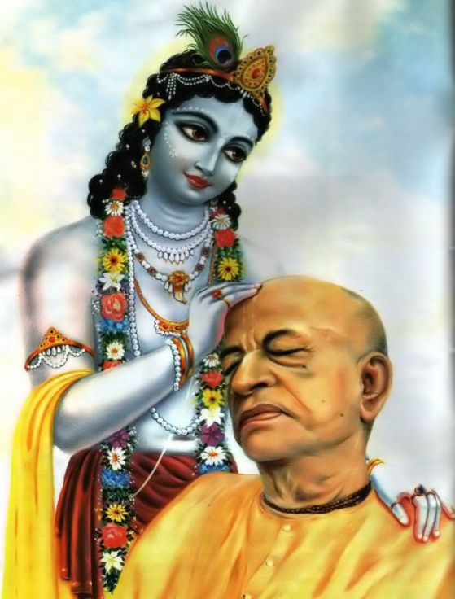

Srila Prabhupad is Krpā-lilā-upādāna
Posted on : 19th October, 2024

But Krishna is so merciful. You have forgotten him, but he has not forgotten you. His heart is pained, thinking, "Some of my children have forgotten me and are suffering." So he comes down here and manifests his sweet transcendental lilãs. By this, the baddha-jivas, conditioned souls, are given an opportunity to see his pastimes, in the form of lilā-kahani, stories. These stories are recorded in śāstras like Śrimad Bhāgavatam and Bhagavad-gitā. He also sends his most dear devotees - sadhus, gurus, mahajanas, vaishnavas to speak bhāgavata-kathā, to give the jivas a chance to hear. When the Supreme Lord comes down, manifests his lilā, then returns to his original abode, his krpā-lilā-upādāna,, the ingredients of his merciful pastimes, remain here. They come as his deity form, his holy name, his abode, his kathā, his bhakta, sādhu, śāstra, and the paraphernalia for his service.
~ HH Gaur govind swami maharaj Book MY REVERED SPIRITUAL MASTER.